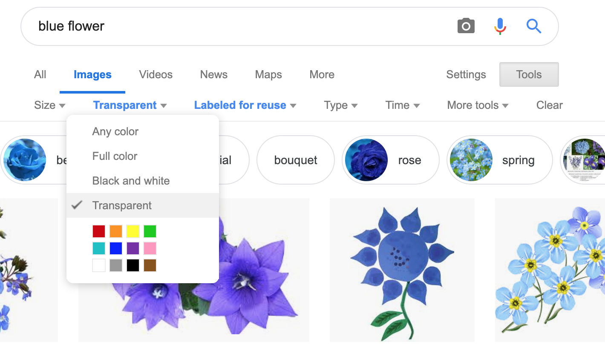
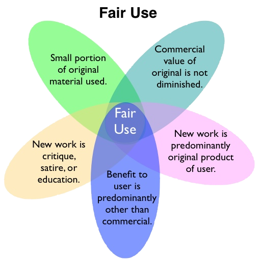

Making Game Images
(Also available in WeScheme)
Students choose, import, scale and orient images for their game, practicing reading comments to make sense of and begin to edit a large body of code.
|
Lesson Goals |
Students will be able to:
|
|
Student-Facing Lesson Goals |
|
|
Materials |
|
|
Preparation |
Students should have their completed “Game Design” work. |
|
Key Points for the Facilitator |
|
define-
to associate a descriptive name with a value
function-
a relation from a set of inputs to a set of possible outputs, where each input is related to exactly one output
image-
a type of data for pictures
scale-
resize an image to be larger or smaller while maintaining ratios and proportions
string-
a data type for any sequence of characters between quotation marks (examples: "hello", "42", "this is a string!")
| The Game Starter File | 15 minutes |
Overview
This activity is primarily about review and reading comprehension, in which students open a large and unfamiliar file and must make sense of it using what they’ve seen before.
Launch
By now you’ve learned about defining values, composing functions, and reading contracts. Taken together, that’s a lot of code you’re now able to understand! It’s time to flex your reading skills, and look at the file you’ll be working with to build your video game.
This file has code you haven’t seen before! And that’s ok! For now, see what parts you recognize, and make sure you understand them.
Investigate
-
With your partner, load the Blank Game Starter File.
-
As you investigate the starter file, record what you Notice and Wonder on Notice and Wonder.
Synthesize
-
What familiar things did you see in the Game Starter File file?
-
What were some unfamiliar things? Any idea what they might do?
-
Answers vary: new functions, comments, images
-
-
What data type is
GAME-TITLE? What data type isBACKGROUND?-
GAME-TITLEis a String,BACKGROUNDis an Image
-
-
What does
SCREENSHOTreturn in the Interactions Area?-
An image of the
BACKGROUND,PLAYER,TARGET, andDANGERall together
-
-
Did anyone try pressing "Run"? What happens when you press "Run"?
-
Allow students to discuss what they see and what connections they see with the code
-
-
What do you think
image-urldoes?-
Answers vary: It consumes a String, which is a URL (an image location on the Internet) and produces the Image inside our program
-
What is SCREENSHOT? The Game Starter File defines several image values, such as |
| Finding Your Game Images | flexible |
Overview
This activity is all about finding the right images for students' games. Since the internet never has exactly the right image, students' need to get their games just right motivates them to confront the need for dilation, rotation, and reflection of the images they find. This, in turn feeds back into their understanding of Contracts and Function Composition.
Launch
Guide the students through finding an image, saving it to their Drive, importing it into their program, and defining the image value as PLAYER. Students will change this image later on their own, this is just for teaching purposes.
-
In your favorite search engine (we recommend DuckDuckGo), search for an image and then click "Images".
-
Click "All Types" and select "Transparent". If you’re using Google Image Search, select "Color -> Transparent". This will filter and display images that have a transparent background, appearing as a light white/grey checkerboard pattern behind the character.

{kind=link}
-
Once an image has been selected, click it to expand and save the image to Google Drive. For file management, students may want to create a folder to store their game images.
-
If using a Chromebook, this is done by right-clicking and selecting "Google Drive" on the left for the save location.
-
On a PC or Mac, follow this Quick Guide to Saving Images to Drive.
-
Once the image is saved to Google Drive, it can be brought into the program by using the
"Insert"
button. This will automatically bring in the image using the image-url function, and students can run the code to see the image.
Investigate
What happens if the image we find needs to be made bigger or smaller? What if it needs to be rotated, or flipped?
Students can define the image as a value and make changes to it with the image manipulation functions scale, rotate, flip-horizontal, and flip-vertical.
Strategies for English Language Learners MLR 8 - Discussion Supports: As students discuss, rephrase responses as questions and encourage precision in the words being used to reinforce the meanings behind some of the functions, such as |
With your partner, search the Internet for images to use in your game. You will need 4 images, one for each visual element of their game: BACKGROUND, PLAYER, DANGER, TARGET
Copyright and Fair Use  When adding an image to their game, students must include a comment which gives attribution to the source of the image. |
{kind=link}
Students should:
-
Save the chosen images to their Drive
-
Bring them into the programming environment
-
Include a comment which gives attribution to the source of the image
-
Define the images as values
-
Plan out how to resize and reorient them in their game
-
Make sure the final version of each image is defined as either
BACKGROUND,TARGET,DANGER, orPLAYER
When finished, students should be able to type SCREENSHOT in the interactions window and see all four of their images appropriately sized and oriented.
Synthesize
-
What functions were most useful in helping you customize your images to make your game look and feel how you want it?
-
How did you make use of function composition in customizing your images?
These materials were developed partly through support of the National Science Foundation,
(awards 1042210, 1535276, 1648684, and 1738598).  Bootstrap by the Bootstrap Community is licensed under a Creative Commons 4.0 Unported License. This license does not grant permission to run training or professional development. Offering training or professional development with materials substantially derived from Bootstrap must be approved in writing by a Bootstrap Director. Permissions beyond the scope of this license, such as to run training, may be available by contacting contact@BootstrapWorld.org.
Bootstrap by the Bootstrap Community is licensed under a Creative Commons 4.0 Unported License. This license does not grant permission to run training or professional development. Offering training or professional development with materials substantially derived from Bootstrap must be approved in writing by a Bootstrap Director. Permissions beyond the scope of this license, such as to run training, may be available by contacting contact@BootstrapWorld.org.